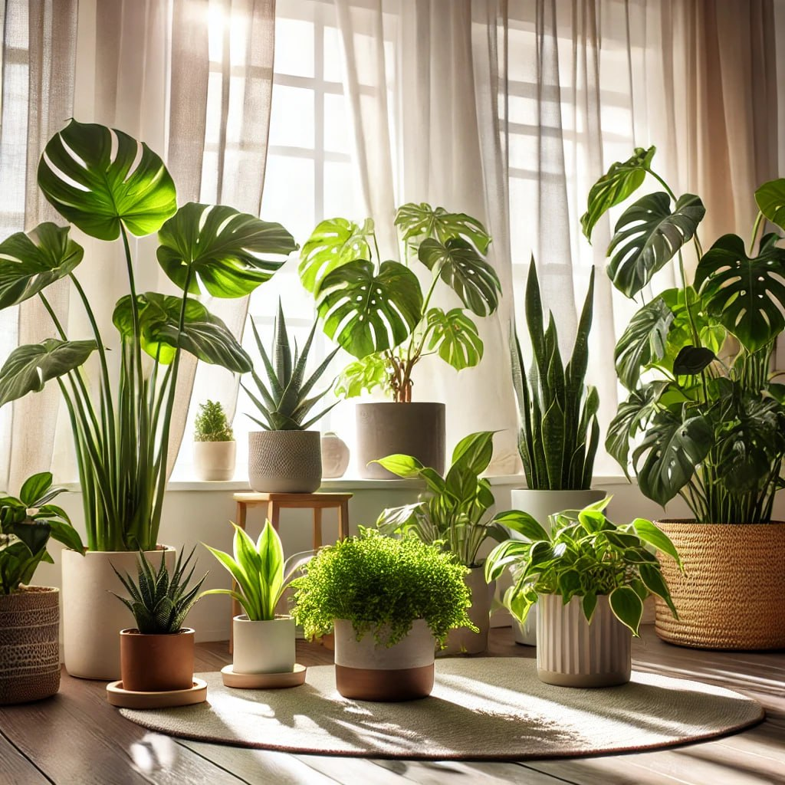

تاریخ انتشار : 3 روز پیش

نـحوه نگهداری گیاهان آپارتمانی
مقدمه
پیشرفت زندگی شهری سبب شده که اکثر افراد در آپارتمانها زندگی کنند و برای تزئین فضای خود گیاهان آپارتمانی را انتخاب کنند. اما برای مراقبت از آنها باید نکات خاصی را رعایت کرد.
نکات کلیدی
1. تنظیم هوای منزل
گیاهان به هوای تازه نیاز دارند. روزانه باید پنجرهها را باز کنید تا هوای کافی به گیاهان برسد.
2. تنظیم نور
نور خورشید برای رشد گیاهان ضروری است. توجه کنید که هر گیاه به میزان نور خاصی نیاز دارد و در صورت نبود نور طبیعی، میتوانید از لامپهای رشد استفاده کنید.
3. آبیاری مناسب
آبیاری باید با توجه به نیاز هر گیاه انجام شود. سوراخهایی در زیر گلدان ایجاد کنید تا آب اضافی خارج شود. برخی گیاهان فقط به یک بار آبیاری در ماه نیاز دارند.
4. رطوبت
رطوبت کافی برای گیاهان لازم است. بهترین زمان اسپری کردن آب صبح یا غروب است تا از ایجاد لکهها جلوگیری شود.
5. رسیدگی به خاک
خاک باید مناسب باشد و تعویض آن در فصول گرم انجام نشود. خاک فشرده نباید باشد تا اکسیژن به ریشهها برسد.
6. مراقبت از آفات
در صورت مشاهده آفات، به سرعت اقدام کنید و از سموم مناسب استفاده کنید.
7. کوددهی
کود دادن باید در فصل رشد انجام شود و از زیاد کردن آن باید پرهیز کرد.
نتیجهگیری
مراقبت از گیاهان آپارتمانی نیاز به توجه ویژه دارد. با رعایت نکات مذکور، میتوانید سلامت و زیبایی گیاهان خود را حفظ کنید. برای اطلاعات بیشتر میتوانید مقالهی آشنایی با گیاهان خانگی آفتاب دوست را مطالعه کنید.
👍 دیدگاه بگذارید
0 نظر